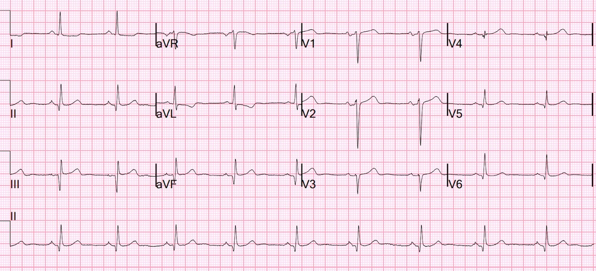
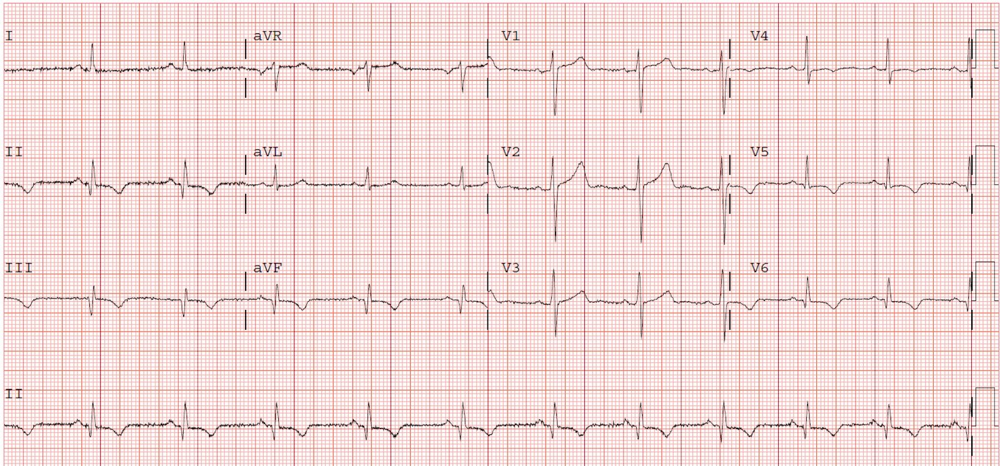
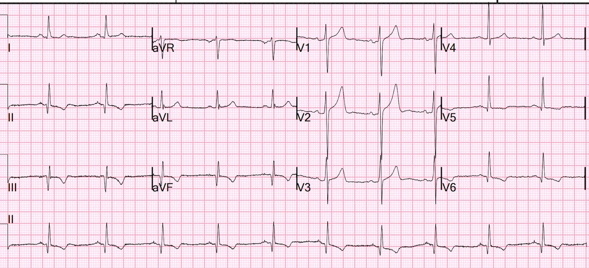
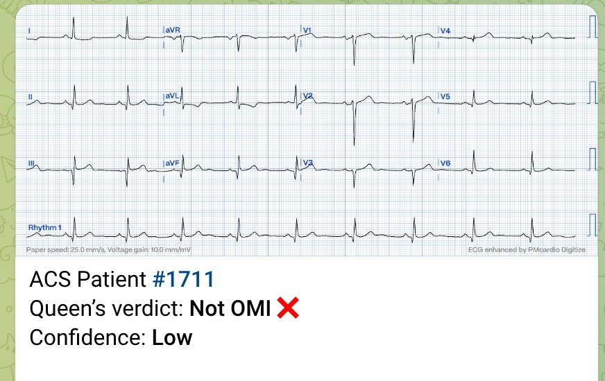
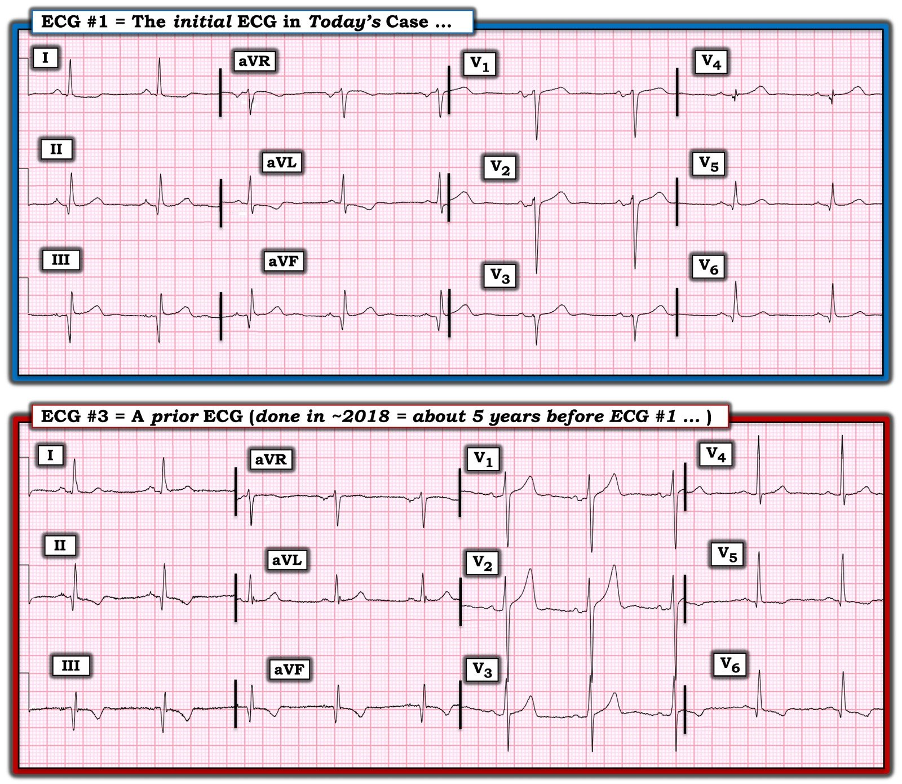

26/07/2023 — Một bệnh nhân bị chóng mặt
Bản dịch tiếng Việt của bài "A Patient with Vertigo" – Dr. Smith’s ECG Blog. Giữ nguyên toàn bộ 6 hình ảnh của bản gốc.
Bệnh nhân này đến khám vì chóng mặt (vertigo) và được ghi điện tâm đồ


Bạn nghĩ gì?
Tôi thấy bản ghi này và lo ngại OMI thành dưới do ST chênh lên (STE) kín đáo ở III, kèm các dấu hiệu soi gương (reciprocal) rất đáng lo ở aVL. Nhưng sóng Q hình thành rõ và sự hiện diện của sóng T bình thường ở các chuyển đạo thành dưới khiến tôi tin rằng đây là nhồi máu cơ tim thành dưới cũ với ST chênh lên tồn tại dai dẳng, hay còn gọi là phình thất trái (LV aneurysm) thành dưới.
Phình thất trái thành trước dễ nhận ra hơn nhiều vì sóng Q thường là sóng QS (hoàn toàn không có sóng R), ở ít nhất một chuyển đạo. Hoặc ít ra chỉ có một sóng r rất nhỏ (khoảng 1 mm).
Vì vậy, rất khó phân biệt OMI thành dưới cấp với phình thất trái thành dưới.
Nhưng bệnh nhân có các điện tâm đồ cũ được lưu từ nhiều năm trước, và hồ sơ cho thấy tiền sử OMI thành dưới đã được can thiệp PCI:
10 năm trước


Đây là điện tâm đồ sau PCI của một OMI thành dưới
Có các sóng T tái tưới máu (đảo ngược, kèm sóng Q bệnh lý hình thành rõ)
Điện tâm đồ cũ này đặt ra câu hỏi: liệu sóng T dương trên điện tâm đồ lúc nhập viện, trái ngược với sóng T đảo ngược trên các điện tâm đồ cũ, có phải là hiện tượng “giả bình thường hóa” (pseudonormalization) sóng T, một dấu hiệu của tắc cấp hay không?
Không! Chỉ có thể chẩn đoán giả bình thường hóa trong giai đoạn sớm (vài ngày đến vài tuần) sau tái tưới máu. Theo thời gian, sóng T trở về bình thường nếu không có OMI mới. Vì vậy, sóng T dương trên điện tâm đồ lúc nhập viện KHÔNG có nghĩa là có bất kỳ sự tắc lại nào.
5 năm trước


Tương tự
Siêu âm tim chính thức trước đây
Thành dưới-sau loạn động (dyskinesis)
“Loạn động” (dyskinesis) là thuật ngữ chuyên môn trên siêu âm tim để chỉ phình thất trái.
Sự kết hợp giữa việc không đau ngực và tiền sử phình thất trái giúp dễ dàng nhận định rằng bệnh nhân này không bị OMI cấp.
Bệnh nhân được loại trừ nhờ các xét nghiệm troponin liên tiếp.
Tôi đã gửi điện tâm đồ này cho Queen of Hearts (PMcardio OMI), và đây là kết luận:



===================================
BÌNH LUẬN CỦA TÔI, bởi KEN GRAUER, MD (26/7/2023):
===================================
Như những người thường xuyên theo dõi Dr. Smith’s ECG Blog đã thấy — một số ca hay nhất mà chúng tôi đăng đến từ những bản ghi mà Dr. Smith hoặc Meyers bắt gặp khi chỉ đơn giản xem qua “các bản ghi trên hệ thống”. Tôi thấy đặc biệt thú vị khi nhận ra tầm quan trọng của Bệnh sử lớn đến mức nào đối với việc diễn giải tối ưu các ca này.
- Ca hôm nay minh họa hoàn hảo cho nhận xét này. Để rõ ràng, trong Hình 1 — tôi đặt điện tâm đồ ban đầu của ca hôm nay cạnh một bản ghi trước đây của bệnh nhân, được ghi khoảng ~5 năm trước đó.
================================
LƯU Ý: Ca hôm nay sẽ đem lại nhiều hiểu biết nhất — NẾU bạn XEM LẠI các bản ghi theo đúng trình tự mà Dr. Smith đã xem chúng!
================================
BẠN sẽ diễn giải điện tâm đồ #1 thế nào?
Khi được giao ca này — ban đầu tôi chỉ thấy điện tâm đồ #1 — và tôi không được cung cấp bất kỳ thông tin lâm sàng nào.
- BẠN sẽ diễn giải điện tâm đồ #1 thế nào nếu đây là bản ghi duy nhất bạn thấy — và — điều duy nhất bạn biết về bệnh nhân là người này đang được khám tại khoa cấp cứu (ED)?


Suy nghĩ của tôi về điện tâm đồ ban đầu:
Diễn giải có hệ thống điện tâm đồ #1 cho thấy:
- Nhịp chậm xoang tần số ~55-60/phút — các khoảng bình thường (PR-QRS-QTc) — trục mặt phẳng trán bình thường (khoảng +20 độ) — không lớn buồng tim.
Về Thay đổi Q–R–S–T:
- Sóng Q — Thấy sóng Q lớn ở mỗi chuyển đạo thành dưới. Có một sóng q rất nhỏ ở chuyển đạo I — và các sóng q hẹp, nhưng không quá sâu, ở các chuyển đạo V5,V6.
- Phức bộ QRS rất nhỏ ở chuyển đạo V4. Với QRS ở chuyển đạo này nhỏ như vậy — sóng Q mà ta thấy ở V4 lớn không tương xứng (tức là sâu bằng chiều cao của sóng R ở V4), rộng và phân mảnh (tức là có khía). Sóng Q này ở V4 nổi bật hơn các sóng q hẹp ở V5,V6 — điều không gặp với “sóng q vách bình thường”.
- Tăng tiến sóng R — Mặc dù thấy sóng r khởi đầu ở chuyển đạo V1 — và sóng r này có lớn hơn ở V2 — vẫn có mất sóng R khi đi từ chuyển đạo V2 sang V3. Chúng ta biết đây không phải dấu hiệu bình thường vì: i) Chuyển đạo ngay kế tiếp ( = chuyển đạo V4) cho thấy sóng Q lớn không tương xứng và phân mảnh; và, ii) Các sóng r khởi đầu ở V1 và V2 rộng hơn thường gặp — và — nếu nhìn kỹ, các sóng r khởi đầu ở V2,V3 cũng phân mảnh (có khía).
- Sóng ST-T — Dường như có ST chênh lên kín đáo (tối thiểu) ở chuyển đạo III, và có thể cả ở aVF (nhưng không ở chuyển đạo II). Nếu chỉ xét riêng — tôi sẽ không biết nên hiểu thế nào về các đoạn ST ở chuyển đạo thành dưới này, vì mức ST chênh lên là tối thiểu và các sóng T đều dương, không có vẻ tối cấp.
- Dù vậy — không nên nghi ngờ gì rằng hình dạng của ST chênh xuống dốc xuống ở chuyển đạo aVL — và đoạn ST dẹt chênh xuống kín đáo ở chuyển đạo I đều bất thường. Đây là dấu hiệu “mới” hay “cũ” lại là chuyện khác.
- Có những bất thường ST-T kín đáo-nhưng-có-thật ở các chuyển đạo trước tim. Gồm: i) Sóng T dương ở chuyển đạo V1 lớn hơn sóng T dương rất nhỏ ở V6; ii) Mất đoạn ST chênh lên nhẹ, dốc lên bình thường ở chuyển đạo V2 (Đoạn ST dẹt ở chuyển đạo này); và, iii) Sóng T lớn không tương xứng so với QRS ở chuyển đạo V3 và V4 — có thể là sóng T tối cấp.
================================
XIN NHẤN MẠNH: Mặc dù lượng “chữ” trong phần phân tích mô tả ở trên của tôi khá nhiều — trên thực tế, tôi thực sự mất KHÔNG QUÁ vài giây để nhận ra tất cả các dấu hiệu này. Lý do tôi vẫn dùng bảng kiểm có hệ thống này hơn 50 năm sau lần đầu bắt đầu đọc điện tâm đồ — là vì nó không làm tôi chậm lại, trong khi nó ngăn tôi bỏ sót bất kỳ dấu hiệu nào.
================================
Tổng hợp lại tất cả:
Cách tôi diễn giải điện tâm đồ #1 trên lâm sàng sẽ tùy thuộc vào Bệnh sử. Như tôi đã nói ở trên — ban đầu tôi không có thông tin nào về bệnh nhân hay bối cảnh lâm sàng. Không biết bất kỳ thông tin lâm sàng nào về ca bệnh vào lúc lần đầu thấy điện tâm đồ #1 — suy nghĩ của tôi như sau:
- Với sóng Q sâu như vậy ở chuyển đạo II, và đặc biệt ở III và aVF — đã có một nhồi máu cơ tim thành dưới vào một thời điểm nào đó. Tôi nghi nhồi máu thành dưới này là cũ — vì mức lệch ST (chênh lên và chênh xuống) là tối thiểu.
- Dường như cũng đã có nhồi máu thành trước vào một thời điểm nào đó — dựa vào “mất sóng R” (từ chuyển đạo V2 sang V3) + phân mảnh kín đáo-nhưng-có-thật (ở V2,V3,V4) + sóng Q lớn không tương xứng và phân mảnh ở V4, với sóng R rất nhỏ ở chuyển đạo này.
- Nhìn chung — tôi không có “cảm giác” rằng điện tâm đồ #1 phản ánh một biến cố tim cấp. Dù vậy — sóng T ở V3 và V4 chắc chắn bất thường (tức là “béo hơn” ở đỉnh và rộng hơn ở chân so với tôi dự đoán, khi biên độ QRS ở các chuyển đạo này chỉ khiêm tốn) — đến mức NẾU bệnh sử là của một bệnh nhân bị đau ngực đáng lo mới khởi phát — tôi chắc chắn không thể gạt bỏ khả năng đây là sóng T tối cấp.
- Tôi nghĩ rằng tìm được một điện tâm đồ trước đây của bệnh nhân này có thể vô cùng quý giá để phân biệt điều gì có thể là “mới” so với “cũ”. Nếu không có bản ghi trước đó — tôi sẽ hoãn diễn giải cuối cùng cho đến khi có dịp tìm hiểu tình huống lâm sàng.
Đã có THÊM thông tin!
Đến lúc này — tôi biết thêm đôi chút về bệnh nhân hôm nay:
- Bệnh nhân là nam giới, từng bị STEMI thành dưới năm 2010.
- Lần này ông đến khoa cấp cứu vì chóng mặt. Ông không than phiền bất kỳ triệu chứng mới nào có thể gợi ý một biến cố tim cấp.
- Tìm thấy 2 điện tâm đồ trước đây trong hồ sơ bệnh án — bản gần nhất được ghi khoảng năm 2018 (tức là ~8 năm sau nhồi máu thành dưới — và ~5 năm trước điện tâm đồ #1).
Để dễ so sánh trong Hình 1 — tôi đặt bản ghi trước đó năm 2018 ( = điện tâm đồ #3) này — cạnh điện tâm đồ #1.
- Sóng Q lớn ở các chuyển đạo thành dưới đã có mặt ở điện tâm đồ #3 — nhưng thay vì đoạn ST dốc lên và chênh lên tối thiểu kèm sóng T dương — đoạn ST lại có dạng vòm (coving) kèm sóng T đảo ngược ở các chuyển đạo thành dưới của bản ghi năm 2018.
- Điều ngược lại thấy ở ST-T của các chuyển đạo bên cao I và aVL, vốn dương trên bản ghi năm 2018 — đây cũng là một thay đổi hoàn toàn so với điện tâm đồ #1.
- Ở các chuyển đạo trước tim — biên độ QRS lớn hơn nhiều, không có sóng Q, mất sóng R hay phân mảnh ở các chuyển đạo V1 đến V4 trên bản ghi năm 2018 trước đó.
- Các sóng q hẹp ở V5,V6 không đổi — nhưng có một ít sóng T đảo ngược trên bản ghi trước đó mà không thấy ở điện tâm đồ #1.
- Nhận định: Chắc chắn đã có những thay đổi trên điện tâm đồ hiện tại của bệnh nhân ( = điện tâm đồ #1) — so với bản ghi trước đó năm 2018. Bằng chứng của nhồi máu thành dưới năm 2010 (dưới dạng sóng Q lớn ở các chuyển đạo thành dưới) có mặt ở cả điện tâm đồ #1 và điện tâm đồ #3. Tôi nghĩ các sóng S sâu ở V1,V2 kèm thay đổi ST-T đi kèm có thể đã phản ánh LVH trên bản ghi năm 2018. Trong khoảng thời gian từ 2018 cho tới khi ghi bản hiện tại — điện tâm đồ hiện tại gợi ý đã có nhồi máu thành trước.
- Xét Bệnh sử của lần nhập viện này (tức là đến khoa cấp cứu vì chóng mặt — không có đau ngực mới) — tôi diễn giải điện tâm đồ #1 là không có OMI.
- Diễn tiến: Troponin tim âm tính — loại trừ một biến cố cấp.
SUY NGHĨ CUỐI CÙNG:
- Diễn giải điện tâm đồ lâm sàng tối ưu là không thể nếu thiếu một bệnh sử ngắn gọn, phù hợp.
- Chúng ta biết bệnh nhân hôm nay có STEMI thành dưới được ghi nhận năm 2010. So sánh điện tâm đồ hiện tại với các điện tâm đồ trước gợi ý rằng bệnh nhân cũng đã bị nhồi máu thành trước kể từ năm 2018.
- Để quản lý lâm sàng lâu dài tối ưu cho bệnh nhân này, điều quan trọng là phải xác định điều gì đã xảy ra vào lúc nào — nhưng hiện chưa thể làm được với lượng thông tin hạn chế mà chúng ta có. Theo dõi sát sẽ là điều thiết yếu — nhưng hôm nay không có OMI cấp …